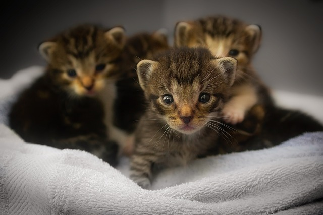

Quem Somos?
Nossos amiguinhos de quatro patas merecem respeito! Essa é a premissa do nosso trabalho: dar uma vida digna para animais que foram rejeitados por seus donos, ou que estão em estado de abandono. Adotar um pet é mais que uma causa animal, é ter um amigo que vai estar ao seu lado em todos os momentos.
Como funciona?
O Patinhas Unidas acredita que a interação entre tutores pode transformar vidas. Conectamos pessoas dispostas a ajudar com quem mais precisa de cuidado: nossos pets. Aqui, você pode adotar, doar e participar de uma rede de apoio animal.